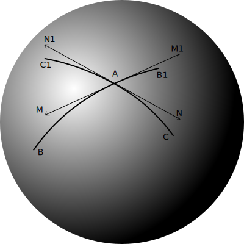
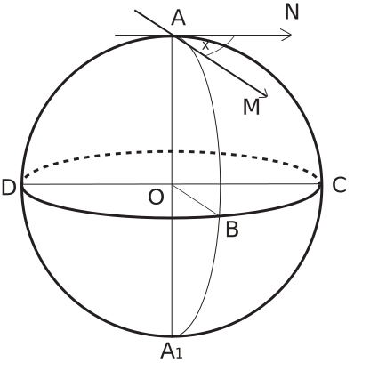
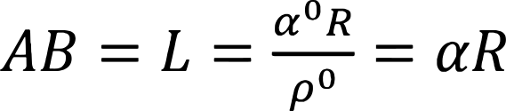
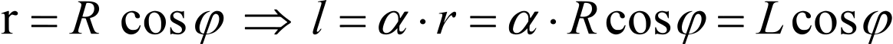

Prostopadła do płaszczyzny K średnica kuli przechodząca przez jej środek O przecina kulę w dwóch punktach M i M1, zwanych sferycznymi środkami okręgu. Okręgi, których płaszczyzny przechodzą przez środek kuli O, nazywane są kołami wielkimi ; pozostałe okręgi na kuli nazywane są mniejszymi okręgami. Sferyczne środki M i M1 wielkiego koła nazywane są jego biegunami. Bieguny są oddalone o 90° od odpowiednich kół wielkich lub ćwiartki koła. Rzeczywiście, punkty A i B wielkiego koła leżą na łukach AM i VM1, które są równe 90° .
Przez dwa punkty na kuli, które nie leżą na końcach tej samej średnicy, można narysować łuk koła wielkiego i to w dodatku tylko jednego. Łuk - koło wielkie - to najkrótsza odległość między punktami na kuli. Należy zauważyć, że dwa punkty dzielą okrąg na dwie nierówne części. Mniejszy łuk AB wielkiego koła wyznacza sferyczną (najkrótszą) odległość między punktami A i B na powierzchni kuli. Łuk ten nazywany jest linią geodezyjną. Linie geodezyjne odgrywają na kuli taką samą rolę jak linie proste w planimetrii.
Tabela zawiera szereg analogii między pojęciami związanymi z płaszczyzną i sferą, przydatnych do dalszej nauki.
| Plaszczyzna |
Sfera |
| Linia prosta |
Łuk wielkiego koła |
| Tylko jedna prosta przechodzi przez dwa punkty |
Przez dwa punkty na kuli, które nie leżą na końcach tej samej średnicy, przechodzi tylko jeden łuk wielkiego koła |
| Dwie proste przecinają się tylko w jednym punkcie |
Dwa łuki wielkich kół o kącie mniejszym niż 180° przecinają się w jednym punkcie |
| Krzywa |
Łul małego koła |
W trygonometrii sferycznej brane są pod uwagę tylko takie figury, które są utworzone przez łuki wielkich kół, dlatego w dalszej części tekstu słowo „łuk” oznacza odcinek łuku wielkiego koła. W tych przypadkach, jeśli chodzi o łuk małego koła, zostanie to specjalnie określone. Długość łuku jest proporcjonalna do wartości kąta środkowego , czyli kąta opisanego końcem promienia przy przejściu od jednego końca łuku do drugiego, więc łuk na kuli mierzy się kąt między promieniami opartymi na końcach tego łuku.
Z reguły w trygonometrii sferycznej, zgodnie z sugestią Leonharda Eulera, brane są pod uwagę tylko te łuki, których długość jest równa lub mniejsza niż połowa długości koła, to znaczy 180°. Ta reguła nazywa się
ograniczeniem Eulera.

Dwa łuki, BB1 i CC1, przecinające się w jednym punkcie
A na kuli tworzą kąt sferyczny CAB, który będziemy oznaczać ∠ CAB. gdzie A jest jego wierzchołkiem, a łuki AB i AC są bokami kąta sferycznego. Wartość kąta sferycznego mierzy się jako kąt między stycznymi MA i NA do boków kąta sferycznego CAB w wierzchołku kąta sferycznego.
TWIERDZENIE:
Kąt sferyczny BAC (
rys. ) mierzy się łukiem BC,
zamknięty pomiędzy bokami, dla którego wierzchołkiem kąta A jest biegun,
∠ BAC = ∪ BC
Dowód:
Ponieważ łuki ABA1 i ACA1 są łukami wielkich okręgów, punkty A i A1 leżą na tej samej średnicy AOA1, reprezentującej linię przecięcia płaszczyzn ABA1 i ACA1. Płaszczyzny te tworzą kąt dwuścienny, który będziemy nazywać odpowiadającym kątowi sferycznemu BAC.

Narysujmy styczne MA i NA do boków kąta sferycznego ABC w jego wierzchołku A. Dzięki własności stycznych leżą one w płaszczyznach kół wielkich ABA1 i ACA1 oraz AM⊥AA1, AN⊥AA1. Narysujmy płaszczyznę przekroju OCBD, prostopadłą do średnicy AA1 i przechodzącą przez środek kuli O. Przecięcie tej płaszczyzny z kulą da koło wielkie BCD, dla którego punkty A i A1 są biegunami. Okrąg ten przecina się z łukami ABA1 i ACA1 w punktach B i C. Zgodnie z konstrukcją OB⊥AA1 i OC⊥AA1 . Zatem kąt BOC będzie również kątem płaskim kąta dwuściennego MAA1N, a ponieważ wszystkie kąty płaskie kąta dwuściennego są równe, ∠ BOC = ∠ MAN = ∠ BAC
Ponieważ kąt BOC jest środkowym kątem łuku ∠ BOC = ∪ BC ==> ∠ BAC = ∪ BC, cnd.
Wniosek 1. Kąt sferyczny i odpowiadający mu kąt dwuścienny mają tę samą miarę
Wniosek 2. Łuk koła wielkiego przechodzący przez biegun innego koła wielkiego jest prostopadły do tego koła wielkiego. ∪ AB = ∪ BC ( rys. )
Łuk ∪AB nazywamy sferyczną prostopadłą do łuku ∪BC, ponieważ kąt między łukami wynosi 90°
Wniosek 3.
Sferyczna prostopadła do danego łuku wielkiego koła przechodzi przez biegun tego wielkiego koła
Dowód:
Prosta OB leży w płaszczyźnie CODB, która jest prostopadła do prostej AA1. Przez dwie proste AO i OB, przecinające się w punkcie O, rysujemy płaszczyznę AOA1B. Ta płaszczyzna jest prostopadła do płaszczyzny CODB. Na przecięciu z kulą płaszczyzna tworzy łuk koła wielkiego ABA1. Zgodnie z Wnioskiem 2 łuk przechodzący przez biegun jakiegoś innego koła wielkiego jest prostopadły do tego koła wielkiego, co dowodzi Wniosku 3.
Wniosek 4.
Pionowe kąty sferyczne są sobie równe
Wniosek 5.
Suma sąsiednich kątów sferycznych wynosi 180°.
§ 1.2 Pomiar łuków i kątów środkowych
Następujące jednostki są używane do pomiaru długości łuków i odpowiadających im kątów środkowych:
| 1. Stopień |
kąt środkowy odpowiadający łukowi 1/360 koła. Stopień (°) dzieli się na 60 minut ('), minutę dzieli się na 60 sekund ("). Miara stopni jest najczęściej stosowana w naukach przyrodniczych i technice. Aby przedstawić stopnie jako ułamek dziesiętny (StD°), używamy skorzystaj ze wzoru:
St°M'Sek" = St + (M/60) + (Sek/3600) = StD°
St° - stopnie, M' - minuty, Sek" - sekundy, StD° - stopnie dziesiętne
|
| 2. Radian |
kąt środkowy oparty na łuku, którego długość jest równa jednemu promieniowi. Miara radiana jest używana głównie w obliczeniach teoretycznych i wzorach analitycznych. 2π radianów odpowiada 360° .
Miary stopni i radianów są połączone następującymi zależnościami: 1 radian = 57,29577951° ; 1°=0,01745329. Aby przeliczyć stopnie (StD°) na radiany (R), zaleca się użycie wzoru:
|
| 3. Godzina |
kąt środkowy odpowiadający łukowi w 1/24 koła. Godzina ( h ) dzieli się na 60 minut ( m ), minuta dzieli się na 60 sekund ( s ). Miara godzinowa jest używana, gdy obliczenia dotyczą obrotu Ziemi i liczenia czasu. Aby rozróżnić jednostki miar godzinowych i stopniowych, często wyjaśnia się: „minuta łuku” - w miarach stopni lub „sekunda czasu” - w miarach czasu. Miary godzinowe i stopniowe są powiązane zależnościami:
1° = 4m, 1h = 15°, 1' = 4s, 1m = 15', 1s = 15"
|
Zależność miary kątowej (stopień), radianowej i liniowej łuku wielkiego koła (ryc. 1.4) określa wzór:

L, α, α° - liniowa, radianowa i kątowa miara łuku koła wielkiego; R - jest promieniem kuli; ρ° - liczba jednostek kąta w radianie ρ° = 180°/π = 57,2957795°.
Zależność miary radianowej od liniowej miary łuku małego koła przechodzącego przez punkt D leżący na łuku BD o kącie środkowym φ (rys. 1.4) od ΔODO1 określa wzór:
